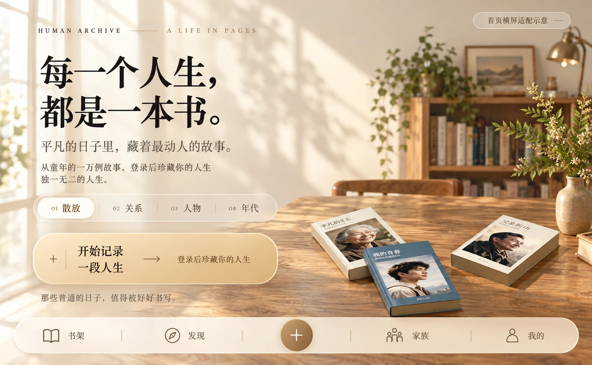
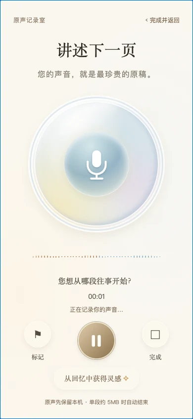

回家的路
小时候，总觉得那条路很长。
放学时，阳光穿过路边的树，落在书包上。母亲站在门口，远远地看见我，就会笑着挥一挥手。
后来去过很多地方。再回想起来，最清楚的，还是那条回家的路。
01A LIFE IN PAGES
那些说过的话、走过的路、爱过的人。
用声音与文字，慢慢写成一本人生之书。
从一段声音开始，留下一个人的一生。

相册里有很多照片。聊天框里有很多消息。
但一个人为什么出发、怎样长大、爱过谁，
常常藏在那些还没有讲完的故事里。
人间存档，给这些故事一个慢慢展开的地方。
不必从第一章开始。
想起哪段往事，就从哪里说起。

有些声音，
值得再听一遍。
小时候，总觉得那条路很长。
放学时，阳光穿过路边的树，落在书包上。母亲站在门口，远远地看见我，就会笑着挥一挥手。
后来去过很多地方。再回想起来，最清楚的，还是那条回家的路。
01“原来，最普通的日子，
就是最珍贵的故事。”
人生章节排版示意 · 使用虚构故事展示阅读理念
有些故事，由一个人讲述。
有些记忆，需要一家人一起补全。
KEEP IT CLOSE
为家人创建人物档案，邀请家族成员，
按权限分享与阅读。让一个人的故事，
成为一家人可以继续翻阅的记忆。
YOUR FIRST PAGE
选择你的方式，走进人间存档。
当前为体验阶段。完整云端功能需要体验账号；界面展示含示例数据，部分新版界面尚未进入当前 APK。
A FEW THINGS TO KNOW
两种入口面向同一款产品。本网页提供示例书架体验，暂未连接云端登录与保存；Android 版把前端资源放进安装包，云端档案仍需联网及登录。浏览器和手机的麦克风权限、录音格式可能不同，以设备实际支持为准。
AI 承担辅助转写、提问与整理工作。原声与原始讲述保留，提取的记忆需要核对。人生事实由你确认，AI 的推测不会自动成为已经核实的经历。AI 功能取决于体验账号与服务可用状态。
目前是体验测试阶段。Android v1.0.3 为内测安装包，公开注册尚未开放。新版沉浸录音界面已完成本地实现，尚未打入该 APK；完整线上流程与设备兼容性仍在验证。
人物档案通过登录和访问权限管理，家族共享由邀请及成员权限控制。官网展示的示例人物、虚构故事和演示资料不代表任何真实用户的私人档案。体验阶段请使用非敏感样本。
不是每个人都会写一本书。
但每个人，都有值得留下的一生。